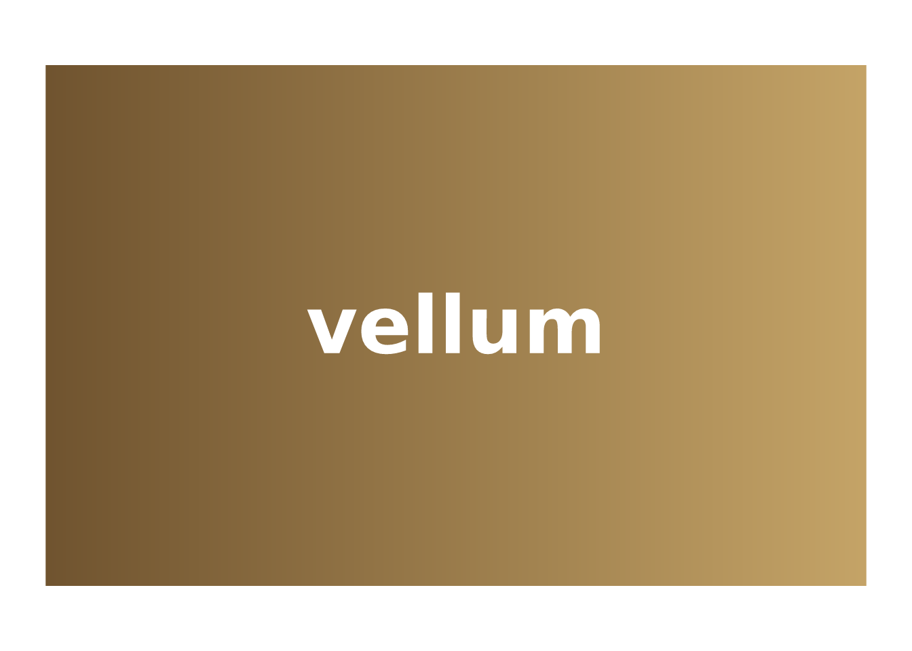

library(vellumverse)
#> ── Attaching packages ───────────────────────────────────── vellumverse 0.3.1
#> ──
#> ✔ vellum 0.5.0 ✔ vellumplot 0.6.0
#> ✔ vellumwidget 0.6.0
#> ── Conflicts ──────────────────────────────────────── vellumverse_conflicts() ──
#> ✖ vellumplot::linear_gradient masks vellum
#> ✖ vellumplot::md masks vellum
#> ✖ vellumplot::radial_gradient masks vellum
#> ✖ vellumplot::sketch masks vellumvellumverse is a meta-package: it holds no plotting code of its own. Its job is to install and attach the three packages that make up the vellum graphics ecosystem, so that
puts all of them on your search path at once. Each one owns a distinct layer of the stack, and the design intent is that you rarely think about the boundaries between them.
Three layers, one scene
The parchment, the pen, and the annotation each have a name:
| layer | package | what it is | the tidyverse analogue |
|---|---|---|---|
| backend | vellum | a retained scene graph, unit/layout engine, and PNG/SVG/PDF renderer, with a Rust engine | grid |
| grammar | vellumplot | a pipe-first grammar of graphics that compiles a plot spec into a vellum scene | ggplot2 |
| interaction | vellumwidget | turns a vellum scene into a self-contained interactive HTML widget | htmlwidgets |
The important word is compiles. A vellumplot plot is not drawn as you build it; it is an inspectable specification that is turned into a vellum scene only when it is printed, rendered, or handed to vellumwidget. Everything below is therefore one scene passing down the stack.
vellum: the parchment
vellum is the foundation. You describe a scene with a small declarative API and render it; the scene graph, layout, and drawing run in Rust, and the same scene renders to raster or vector.
vl_scene(width = 4, height = 2.4, bg = "white") |>
draw(rect_grob(
width = 0.9, height = 0.8,
gp = vl_gpar(fill = linear_gradient(c("#6b4f2c", "#c9a86a")), col = NA)
)) |>
draw(text_grob(
"vellum", x = 0.5, y = 0.5,
gp = vl_gpar(fontsize = 44, col = "white", fontface = "bold")
))
You would reach for vellum directly to build a bespoke visual, or as the target of a higher-level tool, which is exactly what vellumplot is.
vellumplot: the pen
vellumplot gives you the grammar: data in, marks and scales declared with tidy evaluation, everything trained and laid out for you.
vplot(mtcars) |>
mark_point(x = wt, y = mpg, color = hp) |>
scale_color_continuous()
Because the plot is a spec, you can inspect it without drawing anything:
summary(vplot(mtcars) |> mark_point(x = wt, y = mpg, color = hp))
#> <PlotSpec> 32x11 (11 columns), page 6x4 in
#>
#> ── layers
#> • mark_point(x = wt, y = mpg, color = hp)vellumwidget: the annotation
vellumwidget is terminal: hand it a vellumplot plot (or a bare vellum scene) and it compiles the scene, emits the SVG plus a per-element table, and returns an htmlwidget with hover tooltips, selection, brushing, and pan/zoom, with no Shiny and no server.
df <- data.frame(wt = mtcars$wt, mpg = mtcars$mpg, model = rownames(mtcars))
vplot(df) |>
mark_point(x = wt, y = mpg, tooltip = model, data_id = model) |>
as_widget()The tooltip and data_id arguments are declared in vellumplot, read by vellumwidget, and carried through the vellum scene: the three layers agreeing on one contract.
Where each package’s docs live
vellumverse is the front door; each package documents itself in full:
-
vellum: grobs, units, viewports, the paint model,
datashade(), and grid interop. - vellumplot: the full mark, scale, facet, coord, and theme reference.
- vellumwidget: interaction options, linked views, and crosstalk interop.